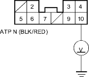

- Check whether the DTC P1705, 5-1, 5, or P1706, 6-1, 6 is indicated.
Is either DTC indicated?
YES - Perform the Troubleshooting Flowchart for the indicated Code (s). 
NO - Go to step 2.
- Turn the ignition switch OFF.
- Shift the shift lever to
 position while pushing the shift lock release.
position while pushing the shift lock release. - Turn the ignition switch ON (II).
- Press the brake pedal and release the accelerator pedal, shift the shift lever out of position and check that the shift lock solenoid operates.
Does the shift lever out of position?
YES - Go to step 6.
NO - Perform the Troubleshooting Flowchart for the Interlock System-Shift Lock System Circuit for 5-door model (see page 14-101).
- Shift to
 position.
position.
- Turn the ignition switch OFF.
- Disconnect under-dash fuse/relay box No. 5 connector (10P).
- Turn the ignition switch ON (II).
- Measure the voltage between the No. 10 terminal of the No. 5 connector (10P) and body ground.
UNDER-DASH FUSE/RELAY BOX No. 5 CONNECTOR (10P)

Wire side of female terminals
Is there voltage?
YES - Repair open in ATP N wire between the transmission range switch and the multiplex control unit.
NO - Check for loose fit in the multiplex control unit connectors and check the reverse lock mechanism.